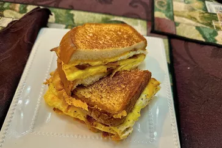

Description
Eggs, often described as nature's perfect food, are a marvel of simplicity and complexity combined. Encased within their protective shells, eggs hold the promise of nourishment and sustenance. The most common type of edible eggs are laid by chickens, but other birds, such as ducks, quails, and ostriches, also lay eggs that are consumed in various cultures.
Ingredients
- Egg: The egg itself is the main ingredient. It consists of the eggshell, egg white (albumen), and egg yolk.
- Salt: Commonly used to season scrambled eggs, omelets, and other egg dishes.
- Pepper: Adds a touch of spiciness and complements the flavor of eggs in various preparations.
- Butter or Oil: Used for frying or scrambling eggs in a pan to prevent sticking and add flavor.
- Milk or Cream: Often added to scrambled eggs to create a creamier texture.
- Cheese: Grated cheese like cheddar, feta, or Parmesan can be added to omelets or scrambled eggs for extra flavor.
- Vegetables: Chopped vegetables like onions, bell peppers, spinach, mushrooms, or tomatoes are commonly used in omelets and frittatas.
STEPS
- Crack the desired number of eggs into a bowl and beat them with a fork or whisk until the yolks and whites are fully combined.
- Add a pinch of salt and pepper to taste (optional).
- For creamier scrambled eggs, add a splash of milk or cream to the beaten eggs (optional).
- Heat a non-stick frying pan over medium-low heat. Add a small amount of butter or cooking oil to the pan to prevent sticking.
- Pour the beaten eggs into the pan and let them sit undisturbed for a few seconds to start setting.
- Gently stir the eggs with a spatula, pushing them from the edges of the pan towards the center to form soft curds.
- Continue stirring until the eggs are just cooked but still slightly moist. Avoid overcooking to maintain a creamy texture.
-
Remove the scrambled eggs from the pan and serve immediately.